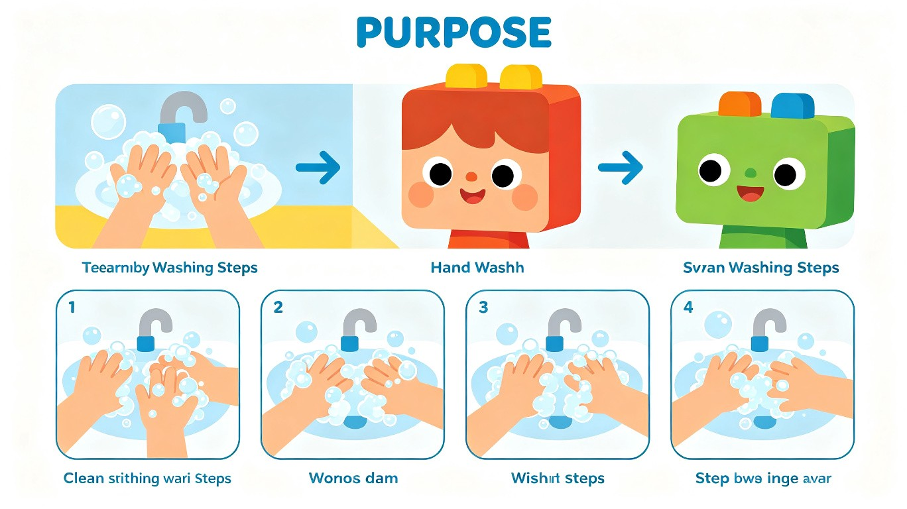
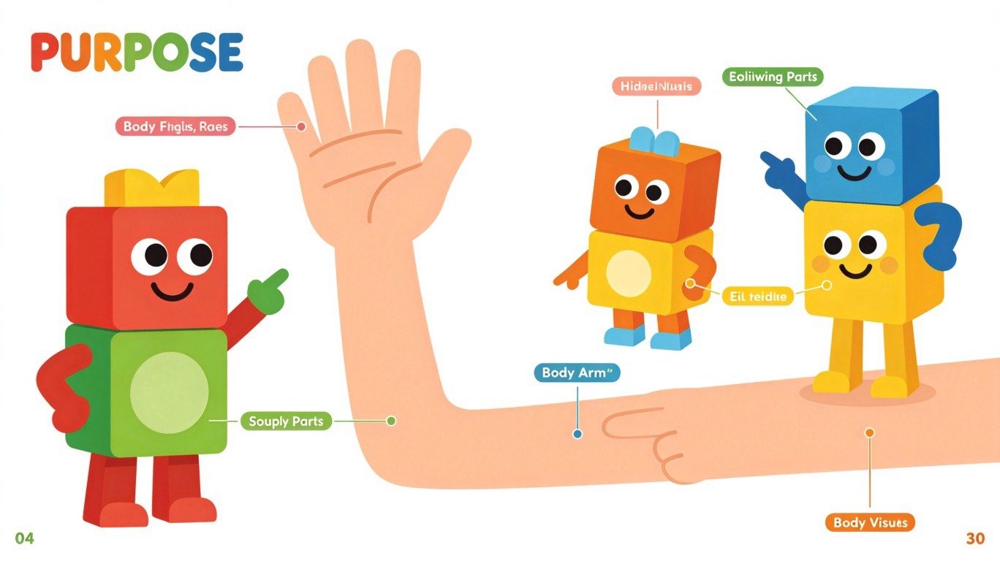
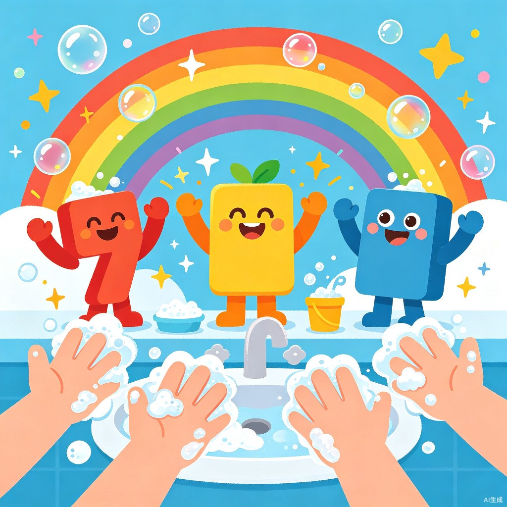

🧼 Wash Your Hands 洗手歌
认识身体部位，学习正确洗手七步法
📅 2026 年 7 月 16 日
📚 Day 6 · 生活知识
⏱ 约 12 分钟
👨👩👦 家长导读 — 请先阅读
- 今天是生活知识课，主题是洗手和身体部位，培养良好的卫生习惯
- 重点英文词汇：hand, finger, wash, soap, water, clean 等身体部位和动作词
- 建议边看边做动作，让孩子跟着步骤实际洗手，加深记忆
- 洗手歌可以反复播放，用唱歌的方式记住 7 个洗手步骤
- 数字小游戏环节可以结合孩子的小手，实际数手指数量
- 跟读练习建议家长先示范，让孩子跟着读，增强信心
- 全部完成后可以给孩子一个"干净小手"贴纸作为奖励
👇 阅读完导读后，向下滚动开始今天的启蒙内容吧！
🧽 Numberblocks 洗手小分队！
今天，Numberblocks 1 到 7 组成了洗手小分队！每个数字代表一个洗手步骤。点击每个数字方块，听听它的名字！
👆 点击每个数字，听英文发音！

🎨 跟着 Numberblocks 一起学习正确的洗手方法吧！
✋ 认识身体部位 — Body Parts
洗手的时候我们会用到哪些身体部位呢？点击卡片听英文发音：

🎨 这些都是我们的身体部位，你都能叫出它们的英文名字吗？
🫧 洗手七步法 — 7 Steps
正确洗手有 7 个步骤，每一步都很重要！点击每个步骤听英文：
📖 Numberblocks 的洗手故事
Numberblocks 们今天要学习洗手啦！一起来听故事吧：
🎵 洗手歌 — Wash Your Hands Song

🎉 洗干净手啦！Numberblocks 们都为你鼓掌！
🖐️ 数一数：手指有几根？
我们每只手有 5 根手指！两只手加起来有几根呢？点击看看：
🔤 英文单词卡片
点击卡片听英文发音，一起读一读吧！
🧠 互动小测验
来考考自己吧！点击你认为正确的答案：
🎤 跟读练习
点击下面的按钮，大声读出每个单词/短语，看看你读得对不对！